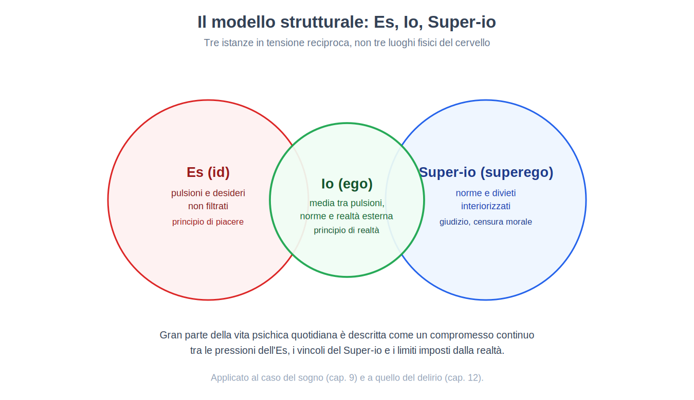
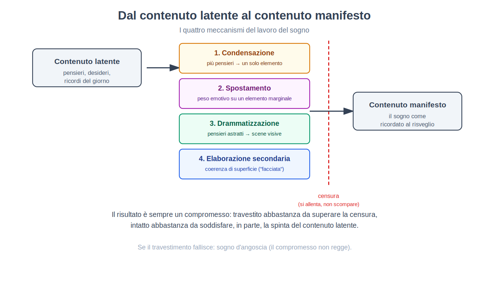
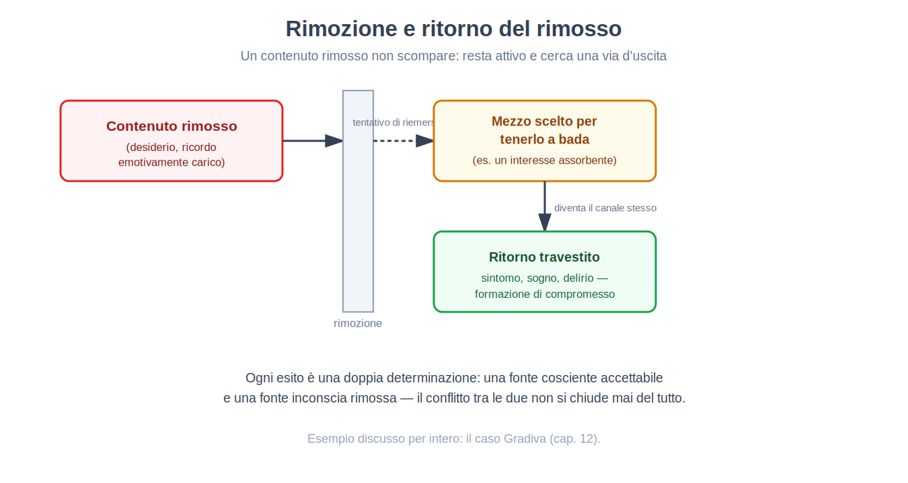
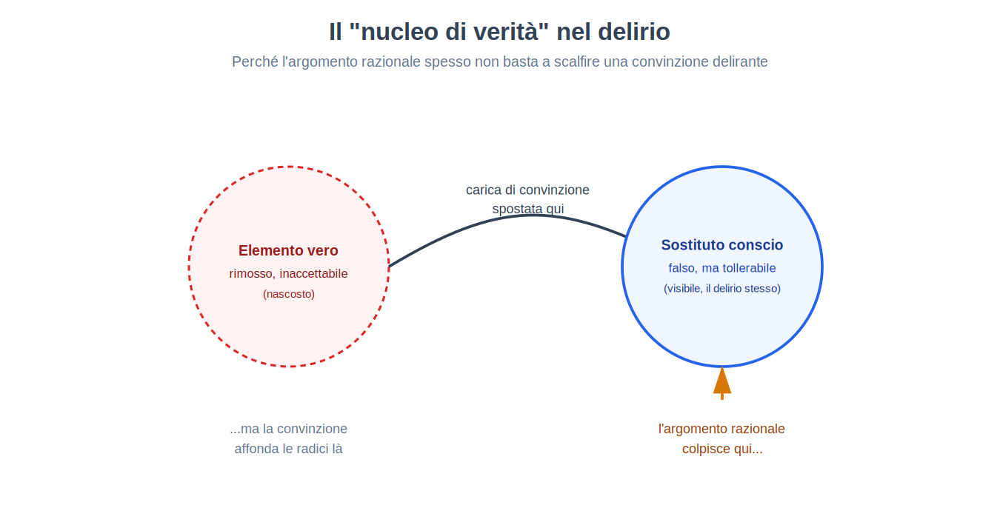
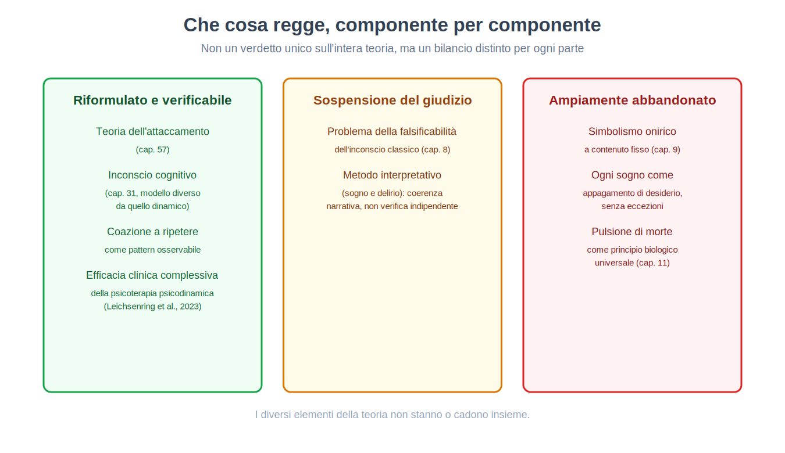

Parte II. La mente come profondità: la tradizione psicoanalitica
Capitolo 7 — Prima della psicologia: la mente come oggetto filosofico
[IN DUE PAROLE]
Prima che esistesse un solo laboratorio dedicato allo studio della mente, la domanda su come funzioni era territorio della filosofia. Questo capitolo racconta il passaggio, a fine Ottocento, da una mente studiata a tavolino a una mente misurata in un edificio con strumenti — e mostra subito i limiti di quella prima misura, riprendendo da dove il capitolo 1 si era interrotto.
Nel capitolo 1 abbiamo lasciato in sospeso una domanda: se l'introspezione spontanea di ciascuno è inaffidabile, che cosa succede se la si prova a rendere un metodo rigoroso, addestrato, ripetibile — invece che un semplice resoconto occasionale? È esattamente il tentativo che occupò la psicologia nei suoi primi decenni come disciplina autonoma, e i suoi risultati furono, come vedremo, istruttivi proprio nel loro fallimento parziale.
Da domanda filosofica a domanda misurabile
Per secoli, chiedersi come nascano le idee, se la mente sia divisibile in parti o unitaria, da dove venga la conoscenza, era stato un problema di filosofia, non di scienza sperimentale. Una tradizione in particolare preparò il terreno alla psicologia scientifica: l'associazionismo (associationism), la tesi secondo cui i contenuti complessi della mente — idee, ricordi, concetti — si formano combinando elementi più semplici secondo leggi regolari, in particolare la contiguità nel tempo o nello spazio (due cose spesso percepite insieme tendono a essere ricordate insieme) e la somiglianza. L'associazionismo era un programma ancora filosofico, ma aveva una caratteristica nuova e importante: proponeva leggi generali, verificabili in linea di principio, invece di intuizioni isolate.
Un secondo antecedente, più direttamente sperimentale, fu la psicofisica (psychophysics): lo studio quantitativo della relazione tra l'intensità fisica di uno stimolo (la luminosità di una luce, il peso di un oggetto) e l'intensità della sensazione percepita. La psicofisica dimostrò, per la prima volta, che un aspetto della mente — la percezione — poteva essere misurato con la stessa precisione numerica di un fenomeno fisico, aprendo la porta a tutto ciò che vedremo nel capitolo 28, dove la sua legge fondamentale sarà presentata per intero.
Il primo laboratorio e l'introspezione come metodo addestrato
Nel 1879, a Lipsia, venne fondato quello che è generalmente considerato il primo laboratorio dedicato per intero alla ricerca psicologica sperimentale. La mossa alla base di questo laboratorio fu esattamente quella anticipata nel capitolo 1: trasformare l'introspezione da resoconto spontaneo e occasionale in un metodo standardizzato. Osservatori addestrati per mesi imparavano a scomporre un'esperienza cosciente — per esempio, la percezione di un suono — nei suoi elementi costitutivi elementari (intensità, qualità, durata), riportando queste componenti con un vocabolario tecnico concordato, in condizioni sperimentali rigorosamente controllate e ripetute.
[IL DISEGNO DELL'ESPERIMENTO]
Che cosa si voleva scoprire. Se un'esperienza cosciente complessa (per esempio, percepire un accordo musicale) potesse essere scomposta in modo affidabile nei suoi elementi sensoriali di base, tramite resoconti introspettivi addestrati.
Che cosa si manipolava. Lo stimolo presentato (per esempio, la frequenza o l'intensità di un suono), in condizioni controllate di laboratorio.
Che cosa si misurava. Il resoconto verbale, altamente standardizzato, che l'osservatore addestrato forniva sulla propria esperienza cosciente immediata, scomposta secondo un vocabolario tecnico prestabilito.
Quale risultato avrebbe smentito l'approccio. Se osservatori diversi, ugualmente addestrati, di fronte allo stesso stimolo avessero riportato sistematicamente elementi diversi e incompatibili tra loro, l'idea stessa che l'introspezione addestrata producesse un dato oggettivo sarebbe stata messa in discussione.
Che cosa è successo. Proprio questo: laboratori diversi, con tradizioni di addestramento diverse, arrivarono spesso a scomposizioni difformi della stessa esperienza, senza un modo indipendente di stabilire quale resoconto fosse corretto. Un caso divenuto emblematico riguardò il tentativo di stabilire se il pensiero potesse avvenire "senza immagini" (senza contenuti sensoriali associati) — un laboratorio lo negava sistematicamente, un altro lo confermava sistematicamente, e nessun esperimento indipendente dai resoconti stessi permetteva di arbitrare tra le due posizioni.
[QUESTIONE CONTROVERSA]
Il problema qui non è lo stesso del capitolo 1. Là il problema era la confabulazione: una spiegazione sbagliata sentita come corretta. Qui il problema è più sottile: anche assumendo piena buona fede e massimo addestramento, non esisteva un modo di verificare il resoconto introspettivo confrontandolo con un dato indipendente — esattamente il requisito di validità di costrutto discusso nel capitolo 3. Un termometro si può calibrare confrontandolo con un altro termometro indipendente; un osservatore addestrato non aveva, contro cui calibrarsi, altro che un altro osservatore addestrato nella stessa tradizione.
Perché questo tentativo non fu uno spreco
Sarebbe un errore leggere questo primo tentativo come un vicolo cieco senza eredità. Il laboratorio di Lipsia stabilì, prima di ogni altra cosa, che la mente potesse essere oggetto di misura sistematica e ripetuta, non solo di riflessione filosofica isolata — una precondizione senza la quale nessuno dei capitoli successivi di questo libro avrebbe potuto esistere. Stabilì anche, per contrasto e in modo altrettanto importante, i limiti dell'introspezione anche nella sua forma più disciplinata: un'osservazione che avrebbe portato, nella prima metà del Novecento, al rifiuto radicale di ogni dato introspettivo da parte del comportamentismo (Parte III) e, per una via del tutto diversa, alla proposta che gran parte della vita mentale sfugga per principio alla consapevolezza — l'ipotesi al centro del prossimo capitolo.
Un'altra linea, quasi contemporanea, merita una menzione: negli Stati Uniti si sviluppò un approccio meno interessato a scomporre l'esperienza in elementi statici, e più interessato a chiedersi a che cosa serva un dato processo mentale nell'adattamento della persona al proprio ambiente — un orientamento noto come funzionalismo (functionalism), che sposterà l'attenzione dalla struttura della coscienza alla sua funzione, un interesse per ciò che il comportamento fa e non per ciò che la coscienza contiene.
[IL PUNTO CHIAVE DEL CAPITOLO]
• L'associazionismo (leggi generali di combinazione delle idee) e la psicofisica (misura quantitativa della percezione) prepararono il terreno per una psicologia sperimentale autonoma.
• Il primo laboratorio dedicato (1879) trasformò l'introspezione in un metodo addestrato e standardizzato.
• Il limite di questo metodo non era la confabulazione del capitolo 1, ma l'assenza di un modo indipendente di verificare i resoconti introspettivi, anche quando erano dati in buona fede da osservatori addestrati.
• Questo limite aprì due strade opposte, che il libro segue entrambe: il rifiuto totale dei dati interiori (comportamentismo, Parte III) e l'ipotesi di una mente in gran parte inaccessibile alla coscienza stessa (psicoanalisi, a partire dal prossimo capitolo).
Capitolo 8 — L'ipotesi dell'inconscio
[IN DUE PAROLE]
Se l'introspezione, anche addestrata, non riesce ad accedere a tutta la vita mentale, forse è perché una parte di quella vita mentale non è, per principio, accessibile alla coscienza. Questo capitolo espone l'ipotesi dell'inconscio, che cosa era chiamata a spiegare, e perché la sua stessa forza esplicativa — capace di rendere conto di quasi tutto — è anche il suo problema metodologico più serio.
Hai mai chiamato una persona con il nome sbagliato — magari quello di un ex, o di qualcuno a cui pensavi in quel momento senza saperlo? Il senso comune liquida l'episodio come una semplice distrazione. Un'altra tradizione, che occupa questo e i cinque capitoli successivi, propose invece di prenderlo sul serio come un indizio: se un errore del genere non fosse casuale, ma il prodotto di un pensiero attivo, presente nella mente, ma non ammesso alla coscienza?
Un'ipotesi introdotta per necessità esplicativa
L'ipotesi psicoanalitica dell'inconscio (the unconscious) non nasce come speculazione filosofica astratta sulla natura della mente, ma come tentativo di dare conto di un insieme di fenomeni clinici che il modello della mente come pura coscienza non riusciva a spiegare. Tre categorie di fenomeni furono centrali:
Gli atti mancati (parapraxes) — lapsus verbali, dimenticanze di nomi o appuntamenti, errori di scrittura — che, nella lettura psicoanalitica, non sono rumore casuale del sistema cognitivo ma il prodotto di un'intenzione conflittuale: un pensiero che preme per esprimersi mentre un altro lo ostacola, con il compromesso tra i due che affiora nell'errore stesso.
I sintomi delle nevrosi allora osservate in ambito clinico — paralisi senza alcuna causa neurologica identificabile, per esempio — che sembravano esprimere in forma corporea un contenuto psichico che il paziente non era in grado di riconoscere consapevolmente come proprio.
L'oblio selettivo: il fatto che certi ricordi, spesso quelli più carichi emotivamente, risultassero sistematicamente più difficili da richiamare di altri, non spiegabile con il semplice decadimento del tempo che tratteremo nel capitolo 38.
Per rendere conto di questi tre fenomeni con un unico principio, l'ipotesi proposta (Freud, a partire dagli anni Novanta dell'Ottocento) fu che la mente contenga contenuti — pensieri, desideri, ricordi — attivi e capaci di influenzare comportamento ed esperienza, ma non ammessi all'introspezione cosciente. Non semplicemente dimenticati nel senso ordinario del termine, ma tenuti fuori dalla coscienza da un processo attivo, che il capitolo 10 chiamerà rimozione.
Perché è un'ipotesi difficile da mettere alla prova
Qui la mossa del capitolo diventa interessante e onesta piuttosto che apologetica: l'ipotesi dell'inconscio ha un problema metodologico che le altre ipotesi incontrate finora nel libro non hanno nella stessa misura. Un esperimento, come visto nel capitolo 2, deve specificare in anticipo quale risultato lo smentirebbe. L'inconscio, per come fu formulato originariamente, è difficile da smentire: qualunque comportamento — inclusa l'assenza di un sintomo previsto, che si può sempre attribuire a una difesa particolarmente efficace — può essere reso compatibile con l'ipotesi tramite un'interpretazione successiva. Questo problema, noto come problema della falsificabilità (falsifiability problem) — l'esigenza filosofica che una teoria scientifica specifichi condizioni sotto cui sarebbe considerata falsa — è stato sollevato con forza dalla filosofia della scienza a partire dagli anni Trenta (Popper, 1934), e resta uno dei punti più discussi su tutta questa tradizione, come vedremo per intero nel capitolo 13.
[ATTENZIONE AL SALTO]
Dire che una teoria ha un problema di falsificabilità non equivale a dire che sia falsa, né che i fenomeni che descrive (l'esistenza di atti mancati sistematici, l'esistenza di contenuti mentali non accessibili alla coscienza) siano inventati. Il problema è più specifico: riguarda se la teoria, nella sua forma classica, permetta di distinguere in anticipo un esito che la confermerebbe da uno che la smentirebbe. Come vedremo nel capitolo 31, l'idea che gran parte dell'elaborazione mentale avvenga fuori dalla consapevolezza cosciente è stata poi ripresa, in forma diversa e più facilmente verificabile sperimentalmente, dalla psicologia cognitiva — un caso interessante di due tradizioni lontanissime nel metodo che convergono su un'intuizione simile.
Un modello della mente in conflitto strutturale
L'ipotesi dell'inconscio non restò isolata: si sviluppò in un modello più ampio della mente come struttura articolata in istanze in tensione reciproca — un Es (id) portatore di pulsioni e desideri non filtrati, un Super-io (superego) interiorizzazione delle norme e dei divieti appresi, e un Io (ego) che media tra le pressioni dell'uno, i vincoli dell'altro e le richieste della realtà esterna. In questo modello, gran parte della vita psichica quotidiana viene descritta come il prodotto di un compromesso continuo tra istanze in conflitto — un'idea che ritroveremo, applicata al caso specifico del sogno, nel prossimo capitolo, e applicata al caso del delirio nel capitolo 12.

[MINI-CRONOLOGIA]
L'ipotesi dell'inconscio, formulata nei suoi termini classici tra la fine dell'Ottocento e i primi decenni del Novecento, precede di alcuni decenni la scoperta, discussa nel capitolo 30 e nel capitolo 31, che una parte sostanziale dell'elaborazione dell'informazione da parte del cervello — dalla percezione alla decisione — avviene effettivamente fuori dalla consapevolezza cosciente. Il capitolo 31 confronterà esplicitamente i due modelli di "inconscio", quello psicoanalitico e quello cognitivo, mostrando dove si somigliano e dove sono, di fatto, ipotesi molto diverse tra loro nonostante il nome condiviso.
[IL PUNTO CHIAVE DEL CAPITOLO]
• L'ipotesi dell'inconscio nasce per spiegare tre fenomeni: atti mancati, sintomi senza causa organica evidente, oblio selettivo.
• Propone che contenuti mentali attivi possano restare fuori dalla coscienza per un processo attivo (rimozione, capitolo 10), non per semplice dimenticanza.
• Il problema della falsificabilità — la difficoltà di specificare in anticipo un esito che smentirebbe l'ipotesi — è il nodo metodologico più discusso di questa tradizione, ripreso per intero nel capitolo 13.
• Il modello strutturale Es/Io/Super-io descrive la vita psichica come compromesso continuo tra istanze in conflitto, un'idea applicata al sogno nel capitolo 9 e al delirio nel capitolo 12.
• Un'ipotesi per certi versi affine — che gran parte dell'elaborazione mentale sia inconsapevole — è stata riformulata in termini verificabili dalla psicologia cognitiva (capitoli 30–31), con importanti differenze rispetto alla versione psicoanalitica.
Capitolo 9 — Il lavoro del sogno
[IN DUE PAROLE]
Se l'inconscio esiste, il sogno fu proposto come una delle sue vie di accesso più dirette. Questo capitolo espone il metodo con cui la psicoanalisi classica interpreta un sogno — non come contenuto già completo, ma come il prodotto di una trasformazione attiva, il lavoro del sogno, di cui il capitolo descrive i quattro meccanismi.
Quasi chiunque, al risveglio, ha provato la sensazione che il proprio sogno "non avesse senso": scene che si susseguono senza una logica narrativa chiara, persone che si trasformano in altre persone, luoghi impossibili. La proposta al centro di questo capitolo è che quella mancanza di senso sia solo apparente: il sogno per come lo ricordiamo — il contenuto manifesto (manifest content) — sarebbe il risultato di una trasformazione sistematica di un materiale di partenza più esteso e più coerente, chiamato contenuto latente (latent content): l'insieme di pensieri, desideri e ricordi (in parte elementi del giorno precedente, in parte desideri più antichi) che il lavoro del sogno elabora e traveste.
I quattro meccanismi del lavoro del sogno
Il lavoro del sogno (dream work) è, secondo questa teoria (Freud, L'interpretazione dei sogni, 1899-1900), il processo psichico che trasforma il contenuto latente nel contenuto manifesto, tramite quattro meccanismi distinti.
La condensazione (condensation) comprime più pensieri latenti in un unico elemento del sogno manifesto, che risulta così sovradeterminato — cioè riconducibile, nell'analisi, a più di una fonte contemporaneamente. Un singolo personaggio onirico può condensare i tratti di più persone reali; una singola immagine può fondere più ricordi distinti.
Lo spostamento (displacement) ridistribuisce l'intensità emotiva: il contenuto psichicamente più significativo di un pensiero latente viene spesso trasferito su un elemento apparentemente secondario del sogno manifesto, mentre l'elemento centrale del sogno può risultare, sorprendentemente, emotivamente neutro. Questo meccanismo — descritto come una sorta di "trasvalutazione dei valori psichici" — spiega perché un sogno può sembrare concentrarsi su un dettaglio banale mentre il vero peso emotivo è altrove, spostato.
La drammatizzazione (dramatisation; in Freud, la considerazione della rappresentabilità) converte pensieri astratti e verbali in scene concrete e visive, con relazioni logiche complesse (causa-effetto, negazione, alternativa "o questo o quello") ridotte a un vocabolario pittorico molto più povero — motivo per cui i sogni, letti come sequenze narrative logiche, sembrano spesso privi di connettivi e di struttura argomentativa.
L'elaborazione secondaria (secondary elaboration) interviene per ultima, imponendo una coerenza di superficie al materiale già condensato, spostato e drammatizzato — costruendo quella che viene chiamata la "facciata del sogno": un racconto apparentemente sensato che maschera, più che rivelare, il lavoro di trasformazione avvenuto sotto di esso.

[IL DISEGNO DELL'ESPERIMENTO]
Il metodo, esposto come procedura. Il paziente riferisce il contenuto manifesto del sogno. L'analista non lo interpreta simbolicamente in modo diretto, elemento per elemento secondo un codice fisso, ma chiede al paziente di produrre associazioni libere (free association) — tutto ciò che gli viene in mente, senza censura o selezione, a partire da ciascun elemento del sogno. Il contenuto latente viene ricostruito seguendo le catene associative del paziente, non applicando una chiave di lettura universale.
Il problema per la verifica indipendente. Questo metodo pone una difficoltà strutturale, distinta dal problema della falsificabilità già discusso nel capitolo 8: il contenuto latente ricostruito dipende in modo sostanziale dalle associazioni fornite dal paziente durante la seduta stessa, guidate a loro volta dalle domande dell'analista. Non esiste, all'interno del metodo stesso, un modo indipendente di verificare che la ricostruzione proposta corrisponda al processo psichico che ha effettivamente generato il sogno, piuttosto che essere una narrazione plausibile costruita a posteriori insieme dal paziente e dall'analista — un rischio per certi versi accostabile, pur in un contesto del tutto diverso, alla confabulazione discussa nel capitolo 1.
Perché il sogno dovrebbe travestirsi
Resta da spiegare perché, se il contenuto latente esiste, non si presenti direttamente alla coscienza durante il sonno. La risposta proposta chiama in causa una censura (censorship): una barriera psichica, la stessa che nella veglia tiene fuori dalla coscienza i contenuti rimossi (capitolo 8), che nel sonno si allenta ma non scompare del tutto. Ciò che emerge nel sogno è quindi sempre un compromesso: abbastanza travestito da poter essere tollerato dalla censura, abbastanza intatto da soddisfare, almeno in parte, la spinta del contenuto latente a esprimersi. Nei casi in cui il travestimento fallisce e un contenuto emerge troppo poco mascherato, il risultato proposto è il sogno d'angoscia: il dormiente si sveglia spaventato, perché il compromesso non ha retto.
Questa lettura porta a una tesi più generale e più impegnativa: il sogno, in questa teoria, rappresenterebbe sempre, in forma travestita o meno, la realizzazione di un desiderio — l'appagamento di desiderio (wish-fulfillment). Nei sogni infantili, secondo questa teoria, il desiderio compare spesso in modo diretto e riconoscibile (il bambino che sogna il dolce che gli è stato negato durante il giorno); nella maggior parte dei sogni adulti, il desiderio sarebbe irriconoscibile finché condensazione, spostamento e drammatizzazione non vengono, per così dire, disfatti dall'analisi.
Una funzione complementare attribuita al sogno è quella di custode del sonno (guardian of sleep): allucinando la soddisfazione di un desiderio interno disturbante, o neutralizzando uno stimolo esterno (un rumore, una sensazione fisica), il sogno permetterebbe al dormiente di continuare a dormire invece di svegliarsi — una specie di sentinella notturna che sveglia il dormiente, tramite l'angoscia, solo quando il disturbo è giudicato troppo serio da gestire altrimenti.
[QUESTIONE CONTROVERSA]
La tesi secondo cui ogni sogno, senza eccezione, rappresenti un appagamento di desiderio — anche quando appare come un incubo terrificante — è una delle affermazioni più ambiziose e più contestate di questa teoria, e lo stesso impianto teorico riconosce eccezioni parziali (i sogni ricorrenti nei traumi, che vedremo affrontati direttamente nel capitolo 11, dove la teoria stessa dovette rivedere questa tesi). La ricerca contemporanea sul sonno (capitolo 26) descrive il sogno con strumenti e domande in larga parte diversi — l'attivazione di specifiche reti neurali durante il sonno REM, il ruolo del sogno nel consolidamento della memoria — e in generale non tratta il travestimento di un desiderio rimosso come la spiegazione principale della maggior parte dei contenuti onirici. Le due prospettive non sono necessariamente incompatibili su ogni punto, ma rispondono a domande sufficientemente diverse da rendere un confronto diretto, punto per punto, più arduo di quanto sembri.
Il simbolismo onirico: un'aggiunta successiva e più controversa
Accanto ai meccanismi individuali del lavoro del sogno, questa teoria propose anche un livello distinto di simbolismo onirico (dream symbolism): un repertorio di corrispondenze fisse e condivise culturalmente (per esempio, oggetti allungati come rappresentazione simbolica di organi sessuali maschili) che non sarebbe il prodotto di un'associazione personale del singolo sognatore, ma un vocabolario preesistente, rintracciabile anche in miti e racconti popolari. Questa parte della teoria, che attribuisce un peso sistematico ai contenuti sessuali nella vita onirica adulta, è tra le più speculative e le meno sostenute da verifiche indipendenti dell'intero impianto, e va tenuta distinta, nel giudicarne la solidità, dai meccanismi di condensazione e spostamento descritti sopra, che restano — come descrizione di come un materiale viene trasformato, indipendentemente da che cosa si presuma contenga sempre — un contributo concettuale più duraturo; la ricerca sul sonno (capitolo 26) affronta il sogno con strumenti diversi, senza aver verificato questi meccanismi.
[IL PUNTO CHIAVE DEL CAPITOLO]
• Il sogno manifesto (ricordato) è il prodotto di una trasformazione di un contenuto latente più esteso, tramite il lavoro del sogno.
• I quattro meccanismi sono condensazione, spostamento, drammatizzazione ed elaborazione secondaria.
• Il metodo delle associazioni libere ricostruisce il contenuto latente, ma senza un modo indipendente di verificare la ricostruzione — un problema distinto da, ma imparentato con, quello della falsificabilità (capitolo 8).
• La censura spiega perché il contenuto latente si presenti travestito; il sogno come appagamento di desiderio e come custode del sonno sono le due funzioni proposte.
• Il simbolismo onirico a contenuto fisso, in particolare sessuale, è la parte più speculativa e meno verificabile della teoria, da distinguere dai quattro meccanismi generali del lavoro del sogno.
Capitolo 10 — Rimozione, difese, ritorno del rimosso
[IN DUE PAROLE]
La rimozione non è semplice dimenticanza: è, in questa teoria, un processo attivo che tiene un contenuto fuori dalla coscienza senza distruggerlo. Questo capitolo mostra perché il contenuto rimosso non scompare mai realmente, e come tenda a "ritornare" — spesso proprio attraverso lo stesso mezzo scelto per tenerlo a bada.
Il capitolo 8 ha introdotto l'inconscio come contenitore di pensieri non ammessi alla coscienza. Questo capitolo si occupa del meccanismo specifico che li mantiene lì: la rimozione (repression), definita come un tipo particolare di oblio, distinto dall'oblio ordinario che tratteremo nel capitolo 38. Un ricordo dimenticato nel senso comune del termine è, per così dire, spento: non più accessibile, ma anche non più psichicamente attivo. Un contenuto rimosso, in questa teoria, resta invece attivo — continua a esercitare un'influenza sul comportamento e sull'esperienza, pur restando inaccessibile all'introspezione diretta.
Un principio inatteso: la rimozione ritorna attraverso il suo stesso mezzo
Uno degli aspetti più originali di questa teoria è l'idea che il contenuto rimosso non ritorni necessariamente attraverso una breccia nella difesa che lo tratteneva, ma spesso proprio attraverso quella stessa difesa. Il meccanismo scelto per tenere a bada un pensiero inaccettabile può diventare, paradossalmente, il canale attraverso cui quel pensiero torna a manifestarsi, in forma trasformata. Un interesse intellettuale coltivato apparentemente come distrazione da un desiderio inaccettabile può, con il tempo, riempirsi di contenuti che rimandano proprio a quel desiderio — non nonostante l'interesse scelto come difesa, ma proprio attraverso di esso.
[CONVINZIONE DIFFUSA]
"Rimuovere un pensiero" nel linguaggio comune spesso significa semplicemente "smettere di pensarci", con uno sforzo di volontà cosciente. Nella teoria qui esposta, la rimozione è per definizione un processo che agisce fuori dalla consapevolezza: se una persona scegliesse consapevolmente di non pensare a qualcosa, quella non sarebbe rimozione ma soppressione volontaria — un fenomeno diverso, distinto e più facilmente studiabile con metodi sperimentali, che incontreremo nel capitolo 38 a proposito dei meccanismi dell'oblio.
Il delirio come caso limite
Un caso particolarmente istruttivo di ritorno del rimosso è quello del delirio (delusion), che il capitolo 12 tratterà per intero: in questa lettura, un delirio non è un pensiero arbitrario o privo di senso, ma una formazione di compromesso in cui un elemento realmente rimosso — spesso un desiderio o un ricordo affettivo — riemerge trasformato, mescolato a un contenuto conscio più accettabile, con una convinzione tanto più tenace quanto più la sua vera fonte resta inaccessibile. Anticipiamo qui solo il principio generale: vedremo nel capitolo 12 come questa lettura sia stata applicata in dettaglio a un caso concreto.

Che cosa ne resta nella ricerca contemporanea
La nozione che un contenuto emotivamente carico possa essere sistematicamente più difficile da richiamare di uno neutro, e che questo processo possa avvenire senza intenzione cosciente, non è rimasta confinata alla teoria psicoanalitica classica: la ricerca sperimentale sulla memoria (capitolo 38) ha sviluppato paradigmi per studiare fenomeni imparentati — l'inibizione da recupero, la soppressione motivata — con disegni sperimentali falsificabili nel senso pieno discusso nel capitolo 2, distinti dal meccanismo di rimozione qui descritto ma non del tutto estranei a esso nello spirito. Il capitolo 38 tornerà su questo confronto in modo esplicito, chiedendosi quanto della rimozione classica sopravviva, in forma modificata e verificabile, in quei paradigmi.
[IL PUNTO CHIAVE DEL CAPITOLO]
• La rimozione è un oblio attivo: il contenuto rimosso resta psichicamente attivo, a differenza dell'oblio ordinario.
• Il contenuto rimosso tende a ritornare, spesso proprio attraverso il mezzo scelto per tenerlo a bada — non necessariamente attraverso una falla nella difesa.
• Il delirio, trattato per intero nel capitolo 12, è il caso limite di questo ritorno: una formazione di compromesso tra il rimosso e il conscio.
• La rimozione va distinta dalla soppressione volontaria, un processo cosciente e diverso.
• La ricerca sperimentale sulla memoria (capitolo 38) studia fenomeni imparentati con metodi falsificabili, in un confronto che quel capitolo riprenderà esplicitamente.
Capitolo 11 — Pulsioni, ripetizione, aggressività
[IN DUE PAROLE]
Se la mente cerca sempre e solo di ridurre la tensione e ottenere piacere, perché alcune persone ripetono, apparentemente senza alcun beneficio, esperienze dolorose? Questo capitolo espone la parte più speculativa e più controversa dell'intero edificio psicoanalitico: un'ipotesi che nasce da un'osservazione clinica solida ma approda a una delle costruzioni teoriche più ambiziose e meno verificabili di questa tradizione.
Il principio di piacere e il suo limite
Il punto di partenza di questa teoria (Freud, Al di là del principio di piacere, 1920, che riprende concetti formulati già nel 1900 e nel 1911) è il principio di piacere (pleasure principle): l'idea che i processi mentali siano regolati automaticamente in modo da evitare la tensione spiacevole e ricercarne la riduzione. Il principio di realtà (reality principle) ne è una modifica: la capacità dell'Io di tollerare una gratificazione ritardata, in vista di un piacere maggiore e più sicuro in futuro — la posticipazione, non la rinuncia.
Il problema che apre questo capitolo è che alcuni fenomeni clinici sembrano contraddire persino il principio di piacere nella sua forma più larga. Pazienti che avevano vissuto eventi traumatici tornavano a riviverli in sogni ricorrenti, con un realismo angosciante — un'eccezione diretta alla tesi, esposta nel capitolo 9, secondo cui ogni sogno rappresenterebbe un appagamento di desiderio: qui non c'è alcun desiderio visibile appagato, solo la ripetizione pressoché letterale dell'evento doloroso.
[IL DISEGNO DELL'ESPERIMENTO]
L'osservazione all'origine della teoria. Un bambino di circa un anno e mezzo, osservato mentre gioca da solo, ripete continuamente un gioco semplice: lancia lontano da sé un rocchetto legato a un filo, pronunciando un suono interpretato come corrispondente a "via" (fort), per poi tirarlo indietro e accoglierlo con un suono interpretato come "qui" (da) — il cosiddetto gioco del Fort/Da.
L'interpretazione proposta. Il gioco viene letto come una messa in scena ripetuta della partenza e del ritorno della madre — un evento vissuto passivamente dal bambino (che non ha alcun controllo sulle assenze materne) e qui trasformato in un evento controllato attivamente, in cui è il bambino stesso a decidere quando l'oggetto sparisce e quando ritorna.
Perché è un caso limite per il principio di piacere. Anche ammettendo che rendersi attivi rispetto a un evento subito passivamente porti un beneficio psicologico (un guadagno di controllo), il bambino ripete con particolare insistenza proprio la parte spiacevole della sequenza — la scomparsa dell'oggetto — non solo la parte gioiosa del suo ritorno. Da qui l'ipotesi di una spinta a ripetere che opera indipendentemente, e talvolta contro, la ricerca di piacere immediato.
Da osservazioni di questo tipo — il gioco del bambino, i sogni traumatici, e un terzo fenomeno osservato nel corso dei trattamenti stessi, in cui pazienti sembravano ripetere schemi relazionali dolorosi del proprio passato nel rapporto con l'analista invece di semplicemente ricordarli — venne proposta l'esistenza di una coazione a ripetere (repetition-compulsion): una spinta, collocata nell'inconscio rimosso, a ripetere esperienze passate — specialmente dolorose e infantili — come realtà presente, invece che come ricordo. Una spinta descritta come più primitiva del principio di piacere, e capace di scavalcarlo.
Il passo più speculativo: la pulsione di morte
Da qui la teoria compie un passo ulteriore, esplicitamente presentato dal suo stesso autore come speculativo più di ogni altra parte dell'edificio fin qui descritto. Se ogni pulsione è per sua natura conservativa — tende cioè a ripristinare uno stato precedente, come mostra la stessa coazione a ripetere — e se la vita organica, di fatto, termina sempre nella morte per cause interne all'organismo stesso, allora la spinta pulsionale più profonda di ogni essere vivente dovrebbe essere, paradossalmente, il ritorno allo stato inanimato che precede la vita: una pulsione di morte (death instinct, Todestrieb), il cui obiettivo ultimo sarebbe la morte stessa. In tensione con questa spinta si collocherebbe l'Eros: le pulsioni sessuali generalizzate a forza vitale di legame e di crescente complessità, che rinvia il ritorno all'inorganico.
Un principio ancora più profondo, il principio di Nirvana (Nirvana principle), viene proposto come lo strato più fondamentale sotteso allo stesso principio di piacere: la tendenza psichica a ridurre l'eccitazione interna al livello più basso o più costante possibile.
[QUESTIONE CONTROVERSA]
La pulsione di morte è, con ogni probabilità, l'ipotesi più contestata dell'intera tradizione psicoanalitica, contestata apertamente anche da analisti successivi appartenenti alla stessa tradizione. Il ragionamento che la sostiene procede per analogia biologica (il carattere conservativo delle pulsioni, la morte come esito interno della vita) più che per osservazione clinica diretta, ed è esplicitamente presentato, nel testo che la propone, come un tentativo speculativo di cui lo stesso autore riconosce apertamente i limiti. Va tenuta distinta, nel giudicarne la solidità, dalla coazione a ripetere: quest'ultima poggia su osservazioni cliniche (i sogni traumatici, il gioco infantile, i pattern relazionali ripetuti in terapia) relativamente più solide, per quanto anch'esse interpretate all'interno di una cornice teorica specifica e non testate con i disegni sperimentali del capitolo 2.
Un parallelo che vale la pena notare
C'è una convergenza concettuale che vale la pena segnalare esplicitamente, pur trattandosi di tradizioni radicalmente diverse nel metodo: la spinta a ripetere un comportamento anche quando smette di produrre un beneficio evidente non è estranea a quanto vedremo, con strumenti sperimentali del tutto diversi, a proposito dei programmi di rinforzo a rapporto variabile nel capitolo 17 — dove un comportamento (per esempio il gioco d'azzardo) può risultare estremamente resistente all'estinzione proprio per la sua imprevedibilità, non per un guadagno costante. Le due spiegazioni — una pulsionale, una associata al rinforzo intermittente — restano distinte e non intercambiabili, ma entrambe si confrontano con lo stesso enigma comportamentale: la persistenza di un pattern che non è più, o non è mai stato del tutto, vantaggioso.
Sul piano dell'aggressività, questa teoria arriva a proporre che comportamenti sadici e masochistici possano essere letti come manifestazioni dirette della pulsione di morte — nel sadismo, diretta verso un oggetto esterno; nel masochismo, ripiegata sul sé. Anche questa applicazione specifica condivide il carattere fortemente speculativo dell'ipotesi da cui discende, e va letta con la stessa cautela.
[IL PUNTO CHIAVE DEL CAPITOLO]
• Il principio di piacere regola la mente verso la riduzione della tensione; il principio di realtà ne tollera il rinvio.
• I sogni traumatici e il gioco del Fort/Da motivano l'ipotesi di una coazione a ripetere, più primitiva del principio di piacere.
• Da qui la teoria propone, in modo esplicitamente speculativo, una pulsione di morte in tensione con l'Eros, e un principio di Nirvana ancora più profondo del principio di piacere.
• La pulsione di morte è la parte più contestata della teoria, anche all'interno della stessa tradizione psicoanalitica successiva.
• La persistenza di comportamenti non più vantaggiosi trova un parallelo concettuale, non un'equivalenza, nei programmi di rinforzo a rapporto variabile del capitolo 17.
Capitolo 12 — Il delirio come costruzione con un nucleo di verità
[IN DUE PAROLE]
Questo capitolo applica a un caso concreto i principi già incontrati — rimozione, ritorno del rimosso, formazione di compromesso — mostrando come, in questa lettura, un delirio non sia un pensiero arbitrario ma una costruzione elaborata attorno a un elemento realmente rimosso, con una convinzione tenace proprio perché spostata dal suo vero oggetto verso un sostituto più tollerabile.
Doppia determinazione e formazione di compromesso
Il capitolo 10 aveva introdotto il delirio come caso limite del ritorno del rimosso. Qui il meccanismo viene precisato: ogni sintomo, in questa lettura, ha una doppia determinazione (twofold determination) — una fonte cosciente e accettabile, e una fonte inconscia ed erotica — e poiché il conflitto tra le due non si risolve mai del tutto, la formazione di compromesso (compromise-formation) che ne risulta si rinnova continuamente, invece di esaurirsi in un singolo episodio.
Un principio distintivo di questa lettura è che un delirio contenga sempre un nucleo di verità (grain of truth): un elemento realmente rimosso, autentico, la cui carica di convinzione viene però spostata — nello stesso senso di spostamento incontrato nel capitolo 9 a proposito dei sogni — dall'elemento vero, inaccettabile, verso un sostituto conscio, falso ma più tollerabile. Questo spiega, in questa lettura, un tratto clinico spesso osservato: l'estrema difficoltà di scalfire un delirio con il semplice argomento razionale, perché l'argomento colpisce il sostituto conscio, mentre la convinzione affonda le radici nell'elemento vero e rimosso che l'argomento non raggiunge.

[IL DISEGNO DELL'ESPERIMENTO]
Il caso analizzato. Un'analisi psicoanalitica (Freud, Il delirio e i sogni nella «Gradiva» di Jensen, 1907) applicata non a un paziente reale in trattamento, ma a un'opera di narrativa — un procedimento che permette di esporre con chiarezza didattica il metodo interpretativo, pur non potendo, per la natura stessa del materiale, essere sottoposto a verifica clinica indipendente.
Il materiale. Il protagonista, un archeologo, sviluppa una fissazione delirante per un bassorilievo antico raffigurante una donna dal passo particolare, arrivando a credere di poterne incontrare lo spirito tra le rovine di una città sepolta.
L'interpretazione proposta. L'interesse archeologico del protagonista, apparentemente distante da ogni contenuto affettivo, viene letto come il mezzo stesso attraverso cui un affetto rimosso — un amore d'infanzia dimenticato per una compagna reale, il cui modo di camminare rassomigliava a quello della figura scolpita — trova la via per riemergere, travestito da interesse professionale: un caso concreto del principio, già incontrato nel capitolo 10, per cui il rimosso ritorna spesso proprio attraverso il mezzo scelto per tenerlo a bada.
Il limite del metodo, di nuovo. Come già notato a proposito dell'interpretazione dei sogni (capitolo 9), anche qui la ricostruzione della fonte rimossa procede per coerenza narrativa interna al racconto stesso, non per confronto con un dato clinico indipendente — un limite ancora più stringente in questo caso, trattandosi di materiale di finzione letteraria piuttosto che di un resoconto clinico reale.
Che cosa cambierebbe la guarigione, in questa lettura
Un punto rilevante di questa lettura del caso è che il semplice recupero cosciente del ricordo rimosso non basterebbe da solo a dissolvere il delirio: sarebbe necessario un secondo passo, distinto dal primo — il reale ri-coinvolgimento emotivo legato a quel ricordo, non solo la sua conoscenza intellettuale. Questa distinzione tra sapere un fatto rimosso e risentirne realmente l'emozione associata anticipa, in forma rudimentale, una distinzione che la psicoterapia contemporanea (capitolo 76) formulerà in termini assai diversi e verificabili empiricamente, a proposito di quali componenti di un trattamento producano effettivamente cambiamento.
[REGGE ANCORA?]
Il confronto diretto tra questa lettura psicoanalitica del delirio e i modelli sviluppati dalla psicologia cognitiva contemporanea — che spiegano la formazione e il mantenimento dei deliri clinici in termini di bias di ragionamento, anomalie nell'elaborazione percettiva e tentativi di dare senso a un'esperienza anomala — è un confronto che affronteremo per intero nel capitolo 58. Anticipiamo qui solo che le due prospettive condividono un'intuizione strutturale (il delirio come costruzione di senso attorno a un nucleo, non come pensiero puramente casuale) pur partendo da presupposti sul funzionamento mentale molto diversi tra loro, e sarebbe un errore presentarle come intercambiabili.
[IL PUNTO CHIAVE DEL CAPITOLO]
• Ogni sintomo, in questa lettura, ha doppia determinazione (conscia e inconscia) e risulta da una formazione di compromesso che si rinnova nel tempo.
• Un delirio conterrebbe sempre un nucleo di verità, il cui peso di convinzione è spostato su un sostituto conscio più tollerabile — motivo per cui l'argomento razionale spesso non riesce a scalfirlo.
• Il caso analizzato in questo capitolo mostra il principio, già visto nel capitolo 10, per cui il rimosso ritorna attraverso il mezzo scelto per tenerlo a bada.
• Il metodo interpretativo condivide con quello del sogno (capitolo 9) lo stesso limite: la ricostruzione procede per coerenza narrativa interna, senza verifica indipendente.
• Il confronto con i modelli cognitivi del delirio, rinviato al capitolo 58, mostrerà convergenze di intuizione ma differenze sostanziali di metodo e di presupposti.
Capitolo 13 — Che cosa regge della psicoanalisi
[IN DUE PAROLE]
Dopo sei capitoli dedicati a esporre questa teoria nei suoi stessi termini, questo capitolo di chiusura fa un bilancio onesto: che cosa di questa tradizione è confluito nella ricerca verificabile, che cosa è stato abbandonato, e perché la domanda sulla falsificabilità, posta nel capitolo 8, non si chiude con un verdetto netto ma resta un problema aperto, distinto per ciascuna delle sue componenti.
Un bilancio onesto di una tradizione teorica così ampia non può essere un singolo verdetto — "vera" o "falsa" — applicato all'intero edificio. Le parti precedenti di questa Parte hanno già distinto, capitolo per capitolo, elementi con gradi di solidità molto diversi tra loro: dall'osservazione clinica relativamente solida della coazione a ripetere (capitolo 11) all'ipotesi apertamente speculativa della pulsione di morte (capitolo 11), dal problema di falsificabilità strutturale dell'inconscio classico (capitolo 8) alla sua riformulazione verificabile nella psicologia cognitiva (capitolo 31, ripreso qui sotto). Questo capitolo raccoglie i fili.
Che cosa è confluito nella ricerca verificabile
Tre linee di continuità meritano di essere segnalate esplicitamente, perché mostrano che l'eredità di questa tradizione non si limita alla sua influenza culturale, ma include contributi che hanno trovato una forma verificabile all'interno della psicologia sperimentale successiva.
La prima riguarda l'attaccamento. La teoria psicoanalitica fu tra le prime a porre l'accento sul peso decisivo del legame affettivo precoce tra il bambino e chi si prende cura di lui per lo sviluppo successivo della personalità. Questa intuizione, spogliata del suo apparato pulsionale originario, è stata riformulata in termini di predizioni verificabili e sottoposta a decenni di ricerca osservativa ed empirica — la teoria dell'attaccamento (attachment theory), che il capitolo 57 tratterà per intero, con i suoi disegni sperimentali specifici e le sue evidenze a supporto.
La seconda riguarda l'inconscio stesso. Come anticipato nel capitolo 8 (e come si vedrà nel capitolo 31), l'idea che gran parte dell'elaborazione mentale avvenga fuori dalla consapevolezza cosciente non è stata abbandonata dalla psicologia scientifica: è stata riformulata, con metodi sperimentali falsificabili nel senso pieno del capitolo 2, dalla ricerca su attenzione, priming e automatismi cognitivi. È importante essere precisi su questo punto, perché è facile equivocarlo: l'inconscio cognitivo di questa ricerca e l'inconscio dinamico, pieno di contenuti rimossi in conflitto attivo, della psicoanalisi classica sono modelli diversi, con proprietà diverse — il primo descrive perlopiù elaborazione automatica di informazione, non un deposito di desideri repressi in lotta con la censura. Trattarli come la stessa cosa, solo perché condividono il nome, sarebbe un errore.
La terza riguarda il metodo clinico stesso: l'idea che portare alla consapevolezza un contenuto psichico prima inaccessibile, insieme al suo corredo emotivo, possa avere un effetto terapeutico ha influenzato, in forme molto trasformate, diversi approcci alla psicoterapia contemporanea (capitolo 76), anche quando questi si allontanano radicalmente dall'apparato teorico pulsionale qui esposto.
Che cosa è stato lasciato indietro, e perché
All'estremo opposto, alcune componenti specifiche di questa teoria non hanno trovato sostegno empirico sistematico e sono state, nella pratica clinica e nella ricerca contemporanea, ampiamente abbandonate o ridimensionate: il dettaglio del simbolismo onirico a contenuto fisso discusso nel capitolo 9, l'affermazione che ogni sogno senza eccezione rappresenti un appagamento di desiderio, e — con il maggior consenso critico — la pulsione di morte come principio biologico universale discussa nel capitolo 11. Va notato che l'abbandono di queste componenti specifiche non implica l'abbandono dell'intero edificio: come già visto capitolo per capitolo, i diversi elementi della teoria non stanno o cadono insieme.

Il problema dell'efficacia clinica: un bilancio più aggiornato di quanto si creda
Un capitolo di bilancio come questo deve affrontare anche una domanda pratica, distinta dalla domanda teorica sulla falsificabilità: le terapie che discendono da questa tradizione — la psicoterapia psicodinamica (psychodynamic therapy), evoluzione clinica contemporanea di questi principi, spesso molto meno legata al dettaglio pulsionale qui esposto di quanto il nome suggerisca — funzionano?
[NUMERI]
Una revisione sistematica di alto livello (un cosiddetto "esame ombrello", che raccoglie i risultati di più meta-analisi indipendenti; Leichsenring e colleghi, World Psychiatry, 2023) ha stimato, per la psicoterapia psicodinamica a confronto con condizioni di controllo (lista d'attesa, nessun trattamento), dimensioni dell'effetto da moderate a grandi per depressione, ansia, disturbi di personalità e sintomi somatici. Nel confronto diretto con altri trattamenti psicologici a supporto empirico consolidato — in particolare la terapia cognitivo-comportamentale, che tratteremo nel capitolo 76 — la stessa revisione ha trovato differenze di efficacia minime o nulle, indicando equivalenza più che superiorità o inferiorità di un approccio sull'altro.
[REGGE ANCORA?]
Questo dato va letto con una cautela metodologica che vale per l'intera letteratura sull'efficacia delle psicoterapie, e che il capitolo 76 riprenderà in modo sistematico: gran parte degli studi clinici su interventi psicologici — psicodinamici o di altro orientamento — non può ottenere la cecità doppia descritta nel capitolo 2, e i ricercatori che conducono uno studio su un trattamento hanno spesso essi stessi una formazione e una preferenza per quell'approccio (un fattore chiamato effetto di fedeltà allo studio, allegiance effect), un potenziale confondente distinto da quelli discussi nel capitolo 4 ma che opera in modo concettualmente simile. Questo non significa che i risultati citati sopra siano da scartare, ma che vanno soppesati con lo stesso spirito critico applicato in questo libro a ogni altro risultato: non un verdetto definitivo, ma il miglior bilancio disponibile allo stato attuale della ricerca.
Un bilancio che non si chiude in un solo verdetto
Il problema della falsificabilità sollevato nel capitolo 8 non riceve, con questo capitolo, una soluzione netta — e sarebbe disonesto presentarlo come tale. Alcune componenti della teoria hanno ricevuto un giudizio almeno parziale (la coazione a ripetere come pattern osservabile in clinica, che poggia su osservazioni relativamente solide ma non su verifiche sperimentali dirette; l'efficacia clinica complessiva della psicoterapia che ne discende, che è stata invece sottoposta a verifica empirica con esiti perlopiù favorevoli, con le cautele viste sopra). Altre componenti (i meccanismi specifici del lavoro del sogno come spiegazione esclusiva di ogni contenuto onirico, la pulsione di morte come principio biologico) restano, nella loro forma originaria, difficili da sottoporre allo stesso tipo di verifica, e su queste il giudizio più onesto è la sospensione, non l'accettazione né il rigetto categorico. Questo libro tornerà più volte su questa tradizione — a proposito della memoria (capitolo 38), dell'attaccamento (capitolo 57), del delirio (capitolo 58), della dissonanza cognitiva (capitolo 69) — sempre con lo stesso criterio: distinguere, componente per componente, ciò che è stato verificato da ciò che resta ipotesi, senza liquidare l'insieme con un solo giudizio sommario, in un senso o nell'altro.
[IL PUNTO CHIAVE DEL CAPITOLO]
• Attaccamento (capitolo 57), inconscio cognitivo (capitolo 31, da distinguere da quello dinamico) e alcuni principi del metodo clinico sono le tre linee di continuità più solide verso la ricerca verificabile.
• Simbolismo onirico fisso, appagamento di desiderio universale e pulsione di morte sono le componenti più ampiamente abbandonate o ridimensionate.
• Una revisione del 2023 stima per la psicoterapia psicodinamica un'efficacia da moderata a grande contro condizioni di controllo, ed equivalenza (non superiorità né inferiorità) rispetto ad altri trattamenti con supporto empirico consolidato come la terapia cognitivo-comportamentale (capitolo 76) — un dato da leggere con le stesse cautele metodologiche (cecità impossibile, effetto di fedeltà allo studio) che si applicano a tutta la ricerca sulle psicoterapie.
• Il giudizio complessivo su questa tradizione non è un verdetto unico, ma una valutazione componente per componente — il criterio che il libro applicherà ogni volta che la psicoanalisi tornerà in gioco nelle parti successive.